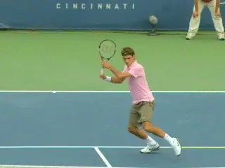
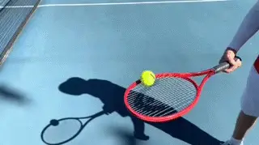
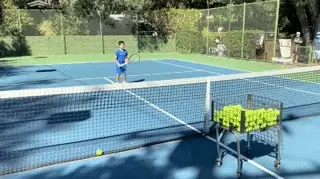
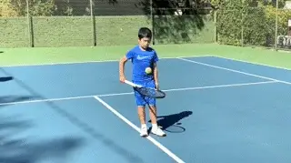
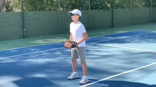

Ultimate Drill Games -Drills for Developing Touch-Part1¶
Drills for Developing Touch:\ Part 1
Dave Hagler

You need touch and feel to hit great dropshots.
In my last article we looked at the effectiveness of drop shots in pro tennis and at all levels. link it's devastating and underused shot, particularly in junior and club tennis.
But to hit consistent drops shots, you need touch and feel--the ability to control the speed, spin and trajectory of the ball. The first thing you need is the ability to take an incoming ball and take pace off so the shot is slowed.
Some players tend to have more natural touch and feel, but any player can work to improve them. So in this next series of articles, let's look at a wide variety of drills and drill games I use to help my students do this. In this first article, here are four basic drills.
Four Basic Drills
Racquet Circles
Put a ball on the racquet face and rotate it around the perimeter of the frame. Keep the ball touching the edge of the frame all the way around. Make a few circles in each direction, then turn the racquet
over and repeat. Since almost everyone has a better "touch side," it's valuable to do this drill on both sides of the racquet until your level of control is the same on both.

Tennis Basketball
Tennis basketball is designed to help beginning players develop open faced racquet skills. In this case my student was so excited to be on Tennisplayer, he forgot his 26 inch racquet and had to borrow a 27.
Put a cart on one side of the net -- fairly close to the net. Have the player try to hit the ball so it lands in the basket.
The coach or partner keeps the ball in play -- so you are actually rallying. You can vary your hits contingent on the skill level of the student, and you can move the basket around. Players who are more
advanced still enjoy trying to making baskets.

Bump Up
Bump the ball up with your palm or knuckles to the sky. Go for 3-5 bumps as a minimum. Then turn the racket over and repeat. Again you will usually find players are better on one side than the other. So
players should do this drill until the result is the same on the less natural side.

Catch
Catching a ball with a baseball glove or even with a cone is very helpful. Initially players can be a bit "ball shy." But working on catching players can develop softer hands very quickly and catch the ball
more in front instead of letting it get somewhat past them. If you use a cone your palm should face forwards and your fingers and thumb should point to the sky.

Lots more drills to come! Stay Tuned.
 players of all ages, but he has a special
passion for junior development. He has
coached numerous sectionally and nationally
ranked junior players and several national
champions. Dave is a USPTA Master
Professional and National Tester, a PTR
Master of Tennis -- Performance, and was one
of the first 100 coaches to complete the
USTA's High Performance Coaching Program.
He has been the USPTA California Division
Pro of the Year and one of 5 National
Recipients of the "Pro of the Year" award
from Head and the PTR.
players of all ages, but he has a special
passion for junior development. He has
coached numerous sectionally and nationally
ranked junior players and several national
champions. Dave is a USPTA Master
Professional and National Tester, a PTR
Master of Tennis -- Performance, and was one
of the first 100 coaches to complete the
USTA's High Performance Coaching Program.
He has been the USPTA California Division
Pro of the Year and one of 5 National
Recipients of the "Pro of the Year" award
from Head and the PTR.
Tennisplayer Forum
**Let's Talk About this Article!\
\
Share Your Thoughts with our Subscribers and Authors!\
\
[[Click
Here]](https://www.tennisplayer.net/bulletin/forum/tennisplayer/93622-drills-for-developing-touch-part-1?view=stream)**
